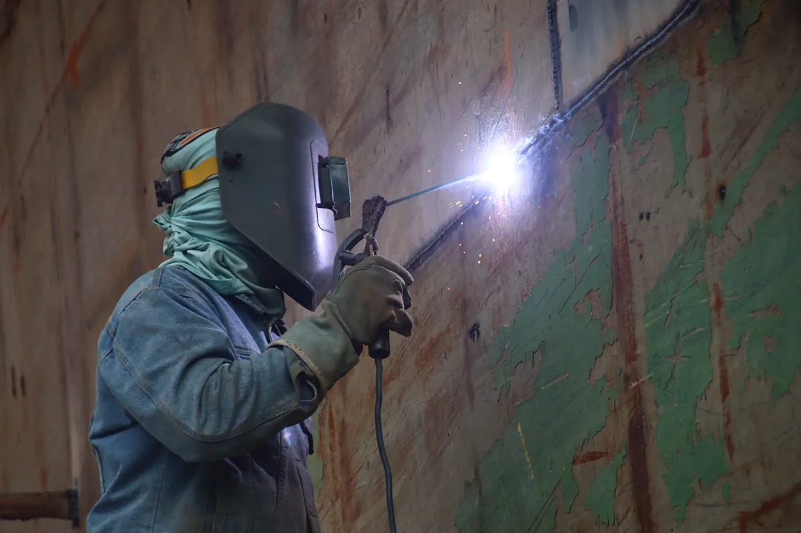

Por que o recebimento é a etapa que mais economiza
Na estrutura metálica, o defeito de montagem raramente aparece no dia da entrega. Parafuso sem aperto, pilar fora de prumo, solda de campo sem pintura ou chumbador mal grauteado viram problema meses depois: telha que não fecha, porta que emperra, ponto de ferrugem, trinca no piso. Nesse momento a equipe de montagem já foi embora e a última parcela já foi paga.
O checklist abaixo serve para galpão, mezanino, cobertura de quadra, laje e sobrado em estrutura metálica. Ele não substitui o projeto: cada item é conferido contra o que o projeto especifica. Para entender o serviço em si, veja montagem de estrutura metálica.
Checklist de recebimento, item por item
1. Documentos
- Projeto estrutural e de montagem na revisão final, com a mesma revisão usada em campo;
- ART de montagem registrada no CREA, além da ART de projeto;
- Certificados de qualidade do aço e dos parafusos, quando o contrato exige;
- Registro das alterações feitas em obra — toda mudança de peça, furo ou ligação precisa estar aprovada pelo projetista.
2. Geometria: prumo, nível e alinhamento
- Pilares no prumo, conferidos com nível ou topografia nas duas direções;
- Vigas e terças niveladas e alinhadas — desalinhamento aparece depois como telha que não assenta;
- Medidas entre eixos batendo com o projeto, principalmente onde entra porta, ponte rolante ou fechamento;
- Tolerâncias são as do projeto e da ABNT NBR 8800; fora delas, a correção é antes do fechamento.
3. Ligações parafusadas
- Todos os furos com parafuso — nenhum furo vazio "para colocar depois";
- Parafuso, porca e arruela do tipo e diâmetro do projeto, sem improviso de diâmetro menor;
- Aperto conferido por amostragem; em ligação com parafuso de alta resistência, o método de aperto especificado em projeto;
- Nenhum furo alargado a maçarico ou feito em campo sem autorização do projetista.
4. Soldas de campo
- Inspeção visual: cordão contínuo, sem trinca, porosidade aparente ou mordedura;
- Dimensão do cordão compatível com o projeto;
- Ensaio não destrutivo onde o projeto pede — líquido penetrante ou partícula magnética, por exemplo, como em ensaios não destrutivos;
- Escória removida e região da solda pintada.
5. Bases, chumbadores e grout
- Chumbadores com porca e contraporca, rosca sobrando acima da porca;
- Grout preenchendo todo o espaço sob a placa de base, sem vazio;
- Nenhum calço provisório esquecido como apoio definitivo.
6. Contraventamentos e travamentos
- Todos os contraventamentos do projeto instalados e tensionados — são eles que seguram a estrutura contra vento;
- Correntes e tirantes de terça instalados.
7. Proteção contra corrosão
- Retoque de pintura em toda solda de campo, furo e região danificada no içamento;
- Peças galvanizadas sem pontos de zinco arrancado; onde houver dano, reparo com tinta rica em zinco;
- Em obra perto do mar, sistema de pintura compatível com a agressividade do local — veja maresia e proteção da estrutura.
8. Entrega
- As built com as alterações de obra;
- Canteiro limpo, sobras de peças e parafusos devolvidas ou listadas;
- Termo de recebimento assinado com as pendências listadas e prazo para cada uma.

Defeitos que mais aparecem depois do recebimento
| Defeito | Onde se vê primeiro | Origem na montagem |
|---|---|---|
| Telha desalinhada ou com goteira | Cobertura | Terças fora de nível ou pilar fora de prumo |
| Ponto de ferrugem em ligação | Nós da estrutura | Solda de campo ou furo sem retoque de pintura |
| Estalos com vento | Cobertura e fechamento | Parafuso sem aperto ou contraventamento frouxo |
| Trinca no piso junto ao pilar | Base dos pilares | Grout com vazio ou chumbador sem contraporca |
| Porta ou portão emperrando | Vãos de acesso | Medidas entre eixos fora do projeto |
Perguntas frequentes sobre recebimento de estrutura metálica
Quem deve fazer a vistoria de recebimento?
O ideal é um engenheiro independente da equipe que montou, com o projeto em mãos. A própria montadora deve entregar a estrutura conferida, mas a vistoria de recebimento protege o contratante, que paga a última parcela e assume a estrutura.
Posso receber a estrutura com pendências?
Pode, desde que o termo de recebimento liste cada pendência, quem corrige e o prazo. Receber sem lista é aceitar a estrutura no estado em que está.
Preciso de ART de montagem além da ART de projeto?
Sim. Projeto e montagem são atividades diferentes, cada uma com responsável técnico. A ART de montagem registra quem responde pela execução em campo.
Quando fazer o recebimento?
Antes de fechar cobertura e fechamentos laterais, quando todas as ligações ainda estão visíveis e acessíveis. Depois de fechado, conferir parafuso e solda exige andaime e desmontagem.
O que fazer se encontrar pilar fora de prumo?
Registrar a medida, comparar com a tolerância do projeto e acionar a montadora antes de liberar o pagamento. A correção costuma ser simples com a estrutura ainda aberta e cara depois do fechamento.
Vistoria de recebimento na Grande Vitória
Conferimos a montagem antes do pagamento final em toda a região:
Vai receber uma estrutura metálica?
Mande o projeto e fotos da obra. Agendamos a vistoria antes do fechamento.